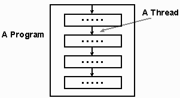
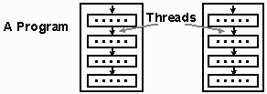
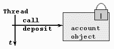
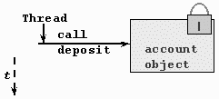
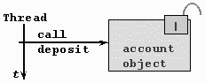
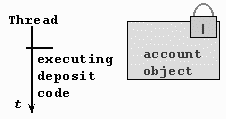
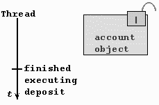
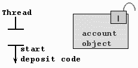
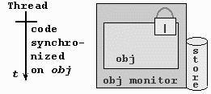
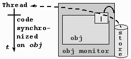

Threads 1
© Eileen Head, Leslie C. Lander, 2000
Purpose: The expose the student to how multi-threading can be supported
in a language.
Java Threads
Threads (from the Java Tutorial)
-
A thread is a single sequential flow of control within a program

Processes
-
A process refers to a single sequential flow of control with its own resources
-
Thread s shares the same data segment (also referred to as execution context
or a lightweight process)

Applications that use multiple threads
-
A server providing services to others
-
One thread for each client. (network server)
-
A real-time control computer controlling a factory
-
One thread for each device that needs monitoring
-
Graphical interfaces.
-
Create a more responsive GUI.
-
A separate thread to react to user events.
-
A separate thread to do intense computation.
Producing Java MultiThreaded Code
-
Subclassing Thread class and overriding run:
public class SimpleThread extends Thread {
public SimpleThread(String str) {
super(str);
}
public void run() {
for (int i = 0; i < 9; i++) {
System.out.println(i+" "+getName( ));
try {
sleep((int)(Math.random( )*1000));
} catch (InterruptedException e) {
...
}
}
System.out.println("done! "+getName( ));
// From the Online Tutorial
}
}
Running it
public static void main (String [] a) {
new SimpleThread("Jamaica").start();
new SimpleThread("Fiji").start();
}
0 Jamaica
0 Fiji
1 Jamaica
1 Fiji
2 Jamaica
3 Jamaica
2 Fiji |
4 Jamaica
3 Fiji
5 Jamaica
4 Fiji
5 Fiji
6 Jamaica
6 Fiji |
7 Jamaica
7 Fiji
8 Fiji
done! Fiji
8 Jamaica
done! Jamaica |
Implementing Runnable
-
Most times you need to subclass a class other than thread.
-
Implement runnable
-
implement run method
-
create object
-
create a new Thread using the constructor that expects a runnable object
-
start the thread
Producing Java MultiThreaded Code
public class SimpleRun implements Runnable {
public void run() {
for (int i = 0; i < 9; i++) {
System.out.println(i + " " + Thread.currentThread().getName( ));
try {
Thread.sleep((int)(Math.random( )*1000));
} catch (InterruptedException e) {
...
}
}
System.out.println("DONE! " + Thread.currentThread().getName( ));
}
...
public static void main (String [] a) {
new Thread(new SimpleRun(), "Jamaica")).start();
new Thread(new SimpleRun(), "Fiji")).start();
}
} // Modified from the Online Tutorial
Running it
0 Jamaica
0 Fiji
1 Jamaica
1 Fiji
2 Jamaica
3 Jamaica
2 Fiji
4 Jamaica |
3 Fiji
5 Jamaica
4 Fiji
5 Fiji
6 Jamaica
7 Jamaica
6 Fiji |
7 Fiji
8 Fiji
9 Fiji
8 Jamaica
9 Jamaica
DONE! Jamaica
DONE! Fiji |
Animation: Outline
-
See Online Tutorial:
-
User Interfaces
-
http://java.sun.com/docs/books/ tutorial/ui/drawing/animation.html
Animation
-
AnimatorApplication.java
-
convert frames per seconds to milliseconds delay = (fps > 0) ? (1000 /fps)
: 100
-
Animation Loop … in the run method of animation thread
Animation loop
while ( running thread ) {
// advance the frame
...
frameNumber ++;
// Display it repaint ();
...
}
Animation: Constant Frame Rate
constant frame rate:
// in the run method's while
try {
startTime += delay;
Thread.sleep(Math.max(0, startTime - System.currentTimeMillis( )));
} catch (InterruptedException e) {
break;
}
Animation- Behaving Politely
-
Allowing the user to suspend the animation - add a mouse listener:
addMouseListener(
new MouseAdapter() {
public void mouseClicked (MouseEvent e) {
if (frozen) {
frozen = false;
startAnimation();
} else {
frozen = true;
stopAnimation();
}
}
}
);
Synchronization
-
Now, the sleep( ) method has some problems and we have not shown how to
arrange for synchronization between different threads
-
Every object in Java has a lock to manage synchronization
-
In fact, each class also has a lock
-
We concentrate on the object lock
Synchronized Methods
-
We can imagine code for a bank account class Account, with the methods
"withdraw," "deposit" and "balance"
-
They should be:
-
synchronized void withdraw(…)
-
synchronized void deposit(…)
-
synchronized void balance(…)
Coordination
-
Why synchronized?
-
Two programs should not try to deposit at the same time because the balance
will be corrupted (the same goes for deposit)
synchronized void deposit(long L) {
balance += L;
}
Execution possibilities
-
Suppose Thread t1 and Thread t2 may both call acctObj.deposit(L) at the
same time
-
We explain in a moment the best way to let t1 and t2 to share the acctObj
-
If deposit is called twice on the same object, we could be doing either
of the following:
The order can interleave in any way
In t1
1.1 load balance
1.2 add L1 to register
1.3 store balance |
In t2
2.1 load balance
2.2 add L2 to register
2.3 store balance |
Singleton pattern
-
There is a "correct" way for various objects to share the same object
-
We frequently compose an object into some larger object
class C {
X x = ...;
...
}
Suppose multiple instances of C (c1, c2, c3, …) need the same instance
x
The singleton
class X {
private static final X s = new X();
//created when class is loaded
private X ( ) {
...
} -- no code is necessary
public static final X getHandle() {
return s;
}
}
The constructor of C includes
x = X.getHandle();
so c1.x, c2.x, c3.x are all the same "s"
Need lock to execute
-
Synchronized methods prevent multiple access to the same data
-
You can only execute a synchronized method when you have the lock on the
object whose method is being called
Obtaining the lock
-
When a synchronized method is called, the caller has to obtain the object’s
lock before the method is executed:

Lock is closed
-
If the lock is not free, the calling thread waits.

Lock is free
-
If the lock is free the thread continues and executes the code in the method:

Lock was free
-
As soon as the call starts the lock is closed:

when you have the lock…you really have it
-
When you have obtained the lock and are executing one synchronized method,
you are able to call other synchronized methods from that one, without
deadlock… because you have the lock !
Lock is closed
-
Any other threads that call a synchronized method of the "account object"
HAVE TO WAIT
-
When the thread that has the lock completes execution of "deposit," the
lock becomes free
End of method call

Lock is closed and becomes free
-
If the lock was closed, the calling thread has to wait
-
When the lock opens one of the waiting threads will begin

mutual exclusion
-
The main purpose of synchronized methods is that the methods must be executed
in "mutual exclusion"
-
"Mutual exclusion" means that if one method is executing, it "excludes"
the execution of any other synchronized method or other invocations of
the same method
purpose of mutual exclusion
-
Mutual exclusion is necessary if methods access the same data and at least
one of them writes new data
-
In that case, the changes to the data must be complete before another method
accesses the data
excessive mutual exclusion
-
If the code in the method is really too long to have the data monopolized
for the whole of the execution of the method, "synchronized blocks" may
be used
critical sections
-
A "critical section" is the part of the code of a method where shared data
is accessed in mutual exclusion
-
The "critical section" of a method may only be a small part of the code
in the method
synchronized blocks
-
Small parts of a method may be synchronized on the object’s lock
void longMethod {
... // many lines
synchronized(this){
...//get lock for critical section
}
... //more lines
}
example:
class onLineTicketing {
void reserveTicket {
... //fill date/price info
synchronized(this){
...//reserve the seat
}
... //sell ticket, get money
synchronized(this){
...//confirm reservation
}
}
}
synchronized blocks
-
There is somewhat more flexibility available in synchronized blocks:
-
You can synchronize on other objects
synchronizing on other objects
-
There is no limitation on which objects can be used for synchronization
void aMethod {
synchronized(barrier){//use lock of "barrier"
...
}
...
}
See BarrierTesting.java
wait and notify
-
The BarrierTest code uses "wait" and "notify"
-
These are "final" methods of class Object
-
Hence all objects have the same methods "wait( )," "notify( )" and "notifyAll(
)"
monitors
-
To manage "wait" and "notify," every object has a "monitor"
-
Unlike general monitors, discussed in operating systems courses/books,
there are no "conditions" in this monitor
wait gives up the lock
-
When a method executes "wait( )," it gives up the lock of this object,
i.e. the one executing the method
-
In a block synchronized on "obj" the call "obj.wait( )" gives up the lock
of "obj"--see BarrierTest
wait in a synchronized method
synchronized <type> methM (...) {
//we have the lock
try{
wait(<optional timeout>); //give up lock
} catch(InterruptedException e){ }
// "wait( )" means "this.wait( )"
...
Where do we wait ?
cold storage
-
Monitors hava a kind of "cold storage" where they put the waiting threads:

you have to have the lock
-
The compiler make sure you only call "wait" in code that has the lock by
inserting a run-time check
-
You can only call "wait" in a synchronized method or a synchronized block
-
The compiler may not enforce this but you will get a run-time error if
you forget to use "wait" this way
wait until notified
-
If you go into the storage using "wait," you stay there until someone else
calls "notify" or "notifyAll" for THAT lock
lock becomes open
-
"Store" gets a reference to the thread and lock is opened

who is notified?
-
If several threads are waiting in the same storage, a single "notify" only
frees one of them
-
You do not know which one is freed
-
After being freed, the thread has to get the lock back to continue processing
letting loose a herd of threads
-
If it makes sense to do that, you can call "notifyAll( )" to free ALL the
threads currently waiting in storage
-
In that case you cannot know the order in which the freed threads will
run